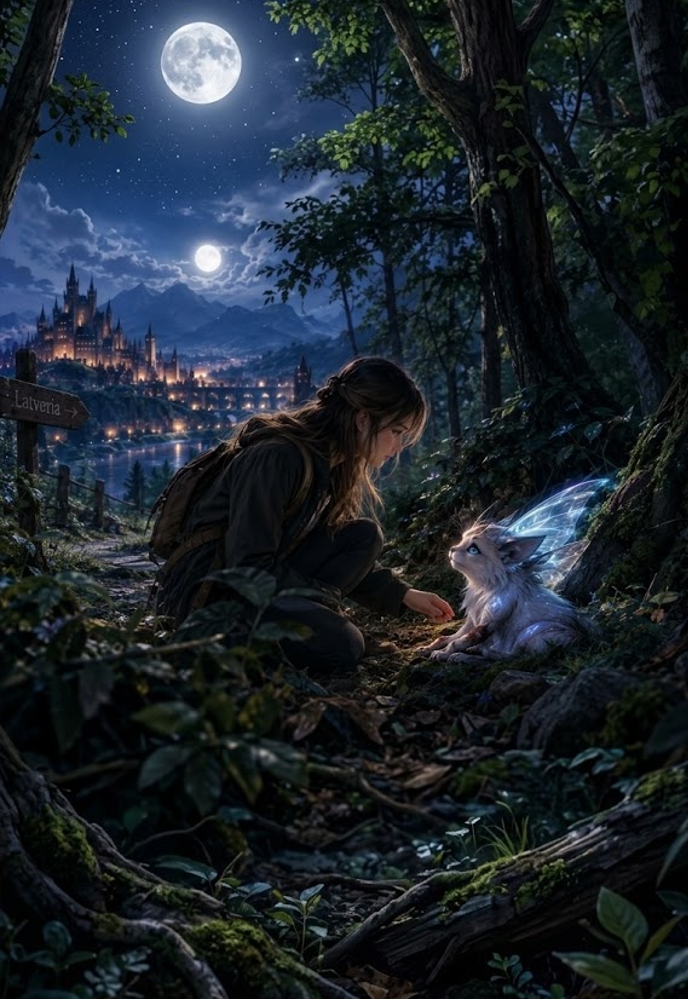

1/3
Camino actual: El Bosque Prohibido
🔊 Narración:
En las afueras de Latveria se encuentra el temido Bosque de Varnok, del que nadie regresa.
Una noche, Ayla escucha un lamento y, al adentrarse entre los árboles, encuentra algo increíble: una pequeña criatura plateada de alas transparentes, escondida con una pata herida. La criatura la observa con miedo.
♦ ───── ♦